InCad придаёт FreeCAD вид и привычки работы Autodesk Inventor и Alibre Design.
InCad — это верстак (workbench) для FreeCAD: модуль, который FreeCAD загружает так же, как свои верстаки Part Design или Sketcher. Когда InCad включён, он заменяет панели инструментов FreeCAD интерфейсом в стиле Inventor:
Всё, что создаёт InCad, — обычная геометрия FreeCAD: деталь — это тело Part Design, эскиз — эскиз Sketcher, сборка использует собственные соединения (joints) верстака Assembly. Ваши файлы остаются обычными файлами .FCStd, которые FreeCAD открывает и с InCad, и без него.
Кнопка FreeCAD в правом верхнем углу окна (Return to FreeCAD) в любой момент возвращает обычный интерфейс FreeCAD; чтобы вернуться в InCad, выберите InCad в списке верстаков.
Файл, сделанный не в InCad, тоже откроется. Тогда в дереве модели будет написано Not an InCad part, а ниже — Convert to InCad Part (для файла с одним телом) и Open in FreeCAD.
0.2.0 — ранняя тестовая сборка. Детали проверялись уже в прошлых сборках; в этой впервые можно тестировать сборки: вставку деталей, связи и соединения, перетаскивание деталей по их степеням свободы и Make Assembly из детали.
InCad ставится один раз через Addon Manager в FreeCAD; обновление — те же несколько шагов.
Mac на Intel, Windows и Linux эта сборка не поддерживает.
…/InCad, а
не на .zip и не на …-macOS-arm64.После установки распакованная папка больше не нужна.
~/Library/Application Support/FreeCAD/v1-1/Mod. Если папки Mod нет, перейдите в
…/FreeCAD/v1-1 и создайте там папку с именем Mod.…/FreeCAD/v1-1/Mod/InCad/InitGui.py, а не …/Mod/InCad/InCad/InitGui.py.При первом запуске InCad спросит, что создать и в каких единицах: Part (один файл детали) или Assembly (вставка и связывание файлов деталей), Millimeters (мм, первыми в списках идут резьбы ISO) или Inches (дюймы, первыми идут UNC/UNF). Если отметить Remember my choice, команда New в следующий раз сразу создаст файл того же вида, ничего не спрашивая. Нажмите Create.
Чтобы вопрос снова появлялся, включите на ленте Tools ▸ Options ▸ Ask on New или выберите ⚙ ▸ Units for New Files ▸ Ask every time.
FreeCAD ▸ Settings… ▸ Workbenches ▸ Available Workbenches ▸ Startup ▸ Default workbench: InCad. (В FreeCAD 1.1 эта настройка находится в разделе Workbenches, а не General.)
Если ставили вручную: закройте FreeCAD, замените папку Mod/InCad, запустите FreeCAD.
Tools ▸ Addon Manager ▸ выделите InCad ▸ Uninstall, затем
перезапустите FreeCAD. Если ставили вручную: закройте FreeCAD и удалите папку Mod/InCad. Можно удалить и
файл журнала ~/Library/Logs/InCad.log. Ваши файлы .FCStd продолжат открываться в обычном FreeCAD.
Короткая экскурсия: для чего какая часть окна.
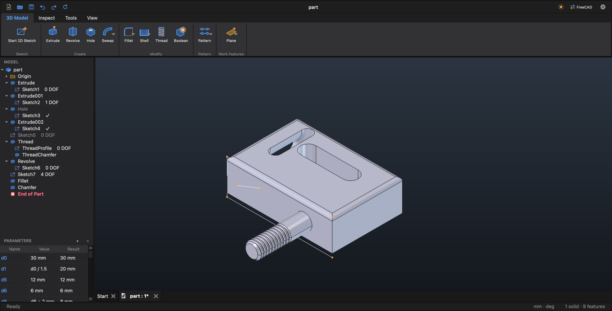
В самой верхней полосе — быстрые кнопки New, Open, Save, Undo, Redo и Update, имя файла, а справа Light / Dark, FreeCAD (Return to FreeCAD) и ⚙ (настройки InCad).
Update пересчитывает модель и перерисовывает дерево и вид. Нажмите её, если вид или дерево вдруг разошлись с моделью; в сборке она ещё и подтягивает изменившиеся детали (см. 9.10).
Меню у InCad короткое: File (New, New Assembly, Open, Save, Save As, Close, Quit), Edit (Undo, Redo) и View (Light / Dark, Zoom All, Home View, Shaded, Wireframe, Assembly Context, Parameters, Return to FreeCAD, Ribbon Size). Всё остальное — на ленте и в меню-жестах.
Вкладки ленты зависят от того, что открыто:
| Режим | Вкладки |
|---|---|
| Нет файла или файл не из InCad | Get Started (New, New Assembly, Open), View |
| Деталь | 3D Model, Inspect, Tools, View |
| Правка эскиза | Sketch, View |
| Сборка | Assemble, View |
Кнопка с маленькой стрелкой — это кнопка с вариантами: она выполняет показанную команду, а стрелка открывает список вариантов (например, Rectangle ▸ Center Rectangle, 3-Point Rectangle …). Наведите указатель на кнопку, чтобы увидеть полное название и подсказку. View ▸ Ribbon Size (или ⚙ ▸ Ribbon Size) переключает размер ленты: Small или Large. Все команды всех вкладок перечислены в приложении B.
Панель MODEL слева — это история детали, как в Inventor:
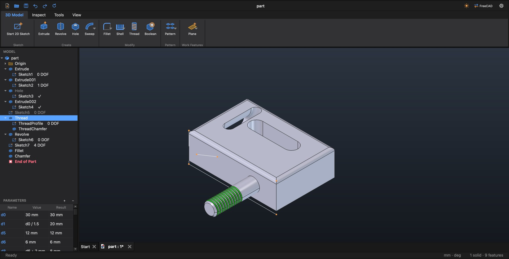
Щелчок по строке выделяет её: грани, созданные операцией, подсвечиваются в виде (рис. 2). Скрытая плоскость, ось, точка или эскиз показываются, пока их строка выделена, и снова прячутся, когда вы выделите другое. Двойной щелчок открывает правку: операция открывает свой диалог, эскиз открывается для редактирования, на плоскости начинается новый эскиз. С ⇧ или ⌘ можно выделить несколько строк.
Правый клик по строке открывает её меню-жест (глава 4):
| Строка | Команды |
|---|---|
| Операция или эскиз | Edit, Move End of Part Here, Suppress / Unsuppress, Rename, Show in Window, Start 2D Sketch, Delete, Hide / Show |
| Тело (Solid Bodies) | Hide / Show, Rename, Show in Window, Delete |
| Плоскость или ось Origin | Start 2D Sketch, Hide / Show |
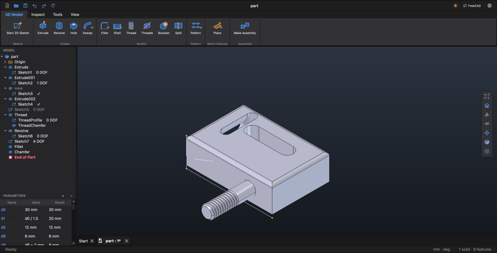
Под деревом модели панель PARAMETERS показывает значения детали в трёх столбцах: Name, Value (то, что вы ввели, — число или формула) и Result.
Width, 40 mm). Это имя можно использовать в любом поле ввода.View ▸ Windows ▸ Parameters (или меню-жест) переводит фокус клавиатуры на эту панель.
Везде, где InCad просит длину или угол, можно ввести:
12) или с единицами (12 mm, 0.5 in,
30°);d3, Width);d0/2, Width - 2*d3, d3*2).Значение-формула пересчитывается каждый раз, когда меняются значения, на которые оно ссылается.
Внизу окна слева — подсказка, что делать дальше (например, «Pick a plane or a flat face for the new sketch»), и сообщения: оранжевые или красные, если что-то не получилось. Когда «ничего не происходит», смотрите сначала сюда. Справа: единицы файла (mm · deg), при работе с эскизом — сколько у него осталось свободы (DOF: 3 или Fully constrained ✓; щёлкните, чтобы увидеть свободную геометрию), и размер детали (2 solids · 14 features).
Light / Dark на полосе заголовка (а также View ▸ Appearance и меню-жест) переключает тему одним щелчком. В меню ⚙ собраны настройки InCad:
| Меню ⚙ | Варианты |
|---|---|
| Theme | Match macOS (как в системе), Light, Dark |
| Ribbon Size | Small, Large |
| Units for New Files | Ask every time (спрашивать), Always millimeters, Always inches |
| Dimension Display | Как подписаны размеры эскиза: Value (40), Name (d3), Expression (d3 = 40) |
| Mouse Navigation | Включено: мышь InCad (вращение левой+правой кнопкой, меню по правой). Выключено: действует собственный стиль навигации FreeCAD. |
⌘ Z отменяет, ⇧ ⌘ Z повторяет (а также кнопки на полосе заголовка и направления NW / NE меню-жеста). Каждая операция — это один шаг отмены: операция, созданная в диалоге, удаление вместе со вспомогательными элементами, скрытие, перетаскивание детали в сборке. Внутри диалога операции Undo шагает назад по изменениям самого диалога. Отмена работает и в эскизе.
Пока открыт диалог операции, команды, которые ему помешали бы (Save, Undo вне диалога, правка эскиза), отклоняются с сообщением «Finish the … dialog first». Сначала нажмите OK или Cancel.
New (⌘ N) создаёт деталь или сборку (как выбрано при первом запуске), File ▸ New Assembly — всегда сборку. Open (⌘ O), Save (⌘ S) и Save As (⇧ ⌘ S) работают с файлом на переднем плане. Close (⌘ W) спрашивает, сохранить ли изменения (Save, Don't Save, Cancel); Quit (⌘ Q) спрашивает про каждый изменённый файл. У каждого открытого файла своя вкладка над видом.
В InCad мышь работает как в Inventor: левая кнопка выделяет, две кнопки вместе вращают вид, правая открывает меню-жесты.
| Действие | Что происходит |
|---|---|
| Щелчок левой | Выделение. Щелчок с ⇧ или ⌘ добавляет к выделенному. |
| Левая + правая, тянуть | Вращение вокруг точки под курсором. |
| Средняя, тянуть | Сдвиг вида. |
| Колесо | Масштаб относительно курсора. |
| Щелчок правой | Меню-жест (в виде и в дереве модели). |
| Правая, тянуть | Жест: выполняет команду меню в этом направлении, не дожидаясь появления меню. |
| Двойной щелчок | В дереве: правка строки (операция, эскиз, деталь сборки). В эскизе: правка размера или массива, к которому относится копия. |
Нет средней кнопки? Orbit и Pan на панели навигации (у правого края вида) или на вкладке View превращают левую кнопку во вращение или сдвиг; чтобы выйти, щёлкните кнопку ещё раз.
⚙ ▸ Mouse Navigation выключает обработку мыши InCad; тогда действует собственный стиль навигации FreeCAD.
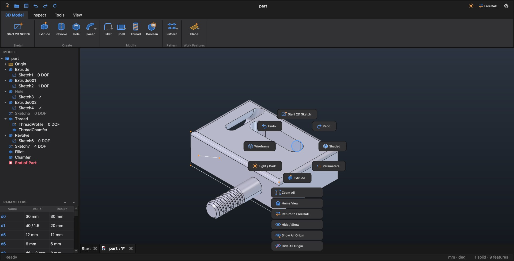
Щелчок правой кнопкой открывает кольцо из восьми команд вокруг курсора (север, северо-восток … северо-запад) и короткий список под ним. Набор команд зависит от того, что под курсором: пустое место, грань, ребро, эскиз, деталь сборки, строка дерева. Когда вы запомнили, где стоит команда, делайте жест: нажмите правую кнопку, потяните в сторону команды и отпустите — ждать появления меню не нужно.
| Под курсором | Кольцо (сначала N, S, E, W) | Список |
|---|---|---|
| Пустое место (деталь) | N Start 2D Sketch, S Extrude, E Shaded, W Wireframe, NW Undo, NE Redo, SE Parameters, SW Light / Dark | Zoom All, Home View, Return to FreeCAD, Hide / Show, Show All Origin, Hide All Origin, Make Assembly |
| Грань | N Start 2D Sketch, S Extrude, E Shaded, W Wireframe, NW Undo, NE Look At, SE Home View, SW Zoom All | Show in Browser, Zoom Selection, Hole, Fillet, Thread, Hide / Show |
| Ребро | N Look At, S Zoom Selection, E Fillet, W Chamfer, NW Undo, NE Redo, SE Home View, SW Zoom All | Show in Browser, Shaded, Wireframe, Hide / Show |
| В эскизе | N Finish Sketch, S Dimension, E Circle, W Undo, NE Line, SE Rectangle, SW 3-Point Arc, NW Trim | Stop Tool, Delete, Show / Hide Constraints, Constraint List, Look At, Construction, Project Geometry, Edit Pattern, Delete Pattern, а на линии или точке — Delete для каждой её зависимости (раздел 5.6) |
| Пустое место (сборка) | N Place, S Mate, E Rigid, W Create, NW Undo, NE Zoom All, SE Home View, SW Ground | Edit, Hide / Show, Suppress, Remove from Assembly, Flush, Insert, Return to FreeCAD |
| Грань детали (сборка) | N Mate, S Flush, E Angle, W Tangent, NE Look At, SW Ground | Edit, Hide / Show, Suppress, Remove from Assembly, Rigid, Parallel, Perpendicular, Zoom Selection |
| Ребро детали (сборка) | N Insert, S Rotational, E Cylindrical, W Slider, SW Ground | Edit, Hide / Show, Suppress, Remove from Assembly, Rigid, Parallel, Perpendicular, Angle, Zoom Selection |
| Нет открытого файла | N New, S Open, E Light / Dark, W Return to FreeCAD | — |
У строк дерева модели свои меню (глава 3; строки сборки — в главе 9).
На вкладке View (часть из них — также на панели навигации и в меню View):
| Команда | Что делает |
|---|---|
| Light / Dark | Переключает тему. |
| Zoom All | Вся модель в окне. |
| Home View | Стандартный изометрический вид. |
| Look At | Взгляд прямо на выделенную грань или плоскость; в эскизе без выделения — прямо на эскиз. |
| Zoom Selection | Выделенное во весь вид. |
| Orbit, Pan | Левая кнопка вращает или сдвигает вид, пока не щёлкнете кнопку ещё раз. |
| Shaded, Wireframe | Стиль отображения. Линии Wireframe светлые в тёмной теме и тёмные в светлой. |
| Section | Разрезает вид (раздел 8.4). Повторный щелчок закрывает разрез. |
| Section by 3 Points | Плоскость разреза по трём отмеченным точкам. |
| Hide / Show | Скрывает или показывает выделенные тела, детали сборки, элементы Origin или эскизы. |
| Show All / Hide All | Show All Origin, Hide All Origin: все плоскости и оси Origin и центральная точка. |
| Assembly Context | В детали, открытой из сборки: показать или скрыть остальные детали вокруг неё (9.9). |
| Degrees of Freedom | В сборке: значки степеней свободы на каждой свободной детали (9.7). |
| Parameters | Переводит фокус клавиатуры на панель Parameters. |
Эскизы работают как в Inventor: рисуете примерно, затем задаёте размеры и зависимости. У каждого размера есть имя, которое можно использовать в формулах.
Двойной щелчок по плоскости в дереве тоже начинает на ней эскиз. Чтобы изменить существующий эскиз, щёлкните его дважды в дереве (или правый клик ▸ Edit).
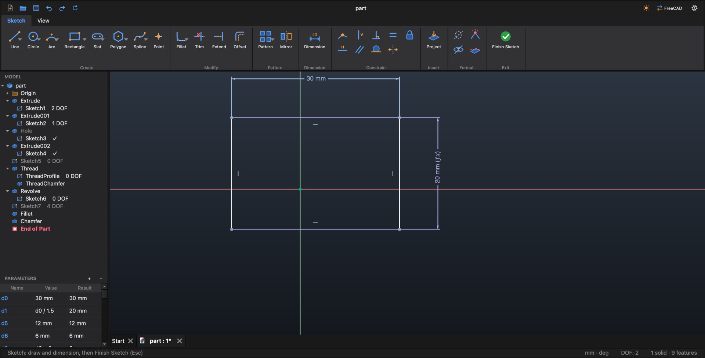
Выйти из эскиза: Sketch ▸ Exit ▸ Finish Sketch, N в меню-жесте или Esc (первое нажатие Esc останавливает работающий инструмент).
Все — в Sketch ▸ Create. Это инструменты Sketcher из FreeCAD; варианты собраны в кнопках со стрелкой.
| Кнопка | Варианты | Клавиша |
|---|---|---|
| Line | Line (цепочка линий; M во время рисования переключает линию и дугу), Single Line | L |
| Circle | Circle (центр и радиус), 3-Point Circle, Ellipse, 3-Point Ellipse | C |
| Arc | 3-Point Arc, Center Arc, Elliptical Arc | A |
| Rectangle | Rectangle (угол, ширина, высота), Center Rectangle, 3-Point Rectangle, 3-Point Center Rect., Rounded Rectangle | R |
| Slot | Center-to-Center Slot, Overall Slot (два крайних конца, затем ширина), Center Point Slot (центр, центр одного конца, затем ширина), Arc Slot, Flat-End Arc Slot | |
| Polygon | Hexagon, Triangle, Square, Pentagon, Octagon, Polygon (N sides) | |
| Spline | Spline (через точки), Control-Vertex Spline | |
| Point | Точка эскиза (например, центр отверстия) |
Sketch ▸ Modify: Fillet и Chamfer (скругление и фаска углов эскиза), Trim (X), Extend, Offset. В Sketch ▸ Pattern — массивы в эскизе (5.9) и Mirror.
Ввод значений при рисовании. Пока инструмент рисует, вводите длину, радиус или угол прямо с клавиатуры; Tab переходит к следующему полю. Esc или Stop Tool (меню-жест) завершает инструмент.
Удаление геометрии или размеров: выделите их и нажмите ⌫ или Del.
Чтобы потом изменить размер, щёлкните его дважды. Каждый размер получает имя (d0, d1 …) и появляется в панели
Parameters, где его можно переименовать (Width) — см. 3.5.
Формулы. В поле ввода щёлкните другой размер эскиза или параметр в панели Parameters — его имя вставится в
формулу: d0/2, Width - 2*d3. В формуле можно использовать другие размеры и параметры, но не
справочный (ведомый) размер того же эскиза.
⚙ ▸ Dimension Display выбирает, как подписаны размеры: значение (40), имя (d3) или оба (d3 = 40).
Sketch ▸ Constrain: Coincident, Horizontal, Vertical, Parallel, Perpendicular, Tangent, Equal, Symmetric, Fix и List (Constraint List, 5.5). Выделите геометрию и нажмите зависимость (или сначала зависимость, потом геометрию).
В строке состояния видно, сколько у эскиза степеней свободы: DOF: 3 или Fully constrained ✓. Щелчок по этой надписи или Sketch ▸ Format ▸ Show Free Geometry выделяет геометрию, которая ещё может двигаться.
Sketch ▸ Format ▸ Show / Hide Constraints скрывает или показывает значки зависимостей (размеры остаются); F8 показывает, F9 скрывает.
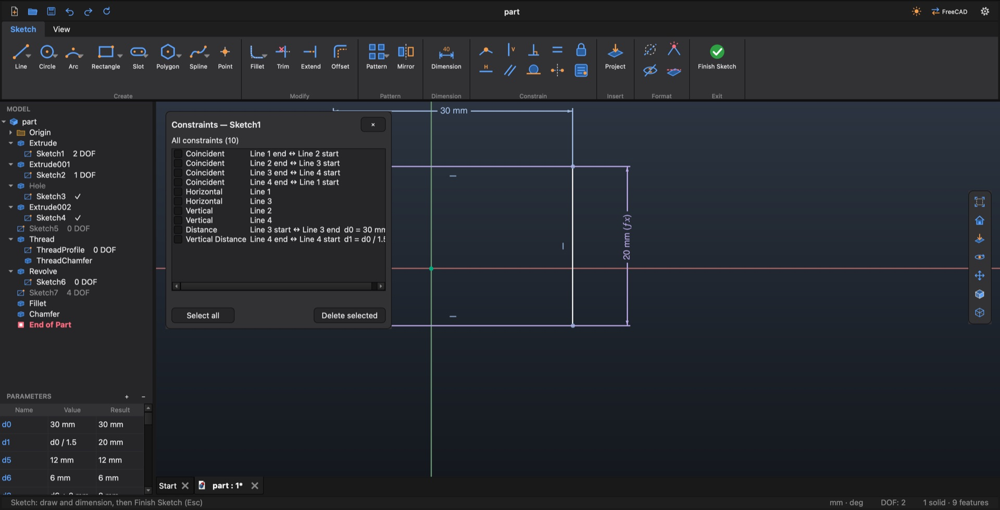
Откройте его через Sketch ▸ Constrain ▸ List или правый клик в эскизе ▸ Constraint List. В списке — все зависимости эскиза, что они связывают и их значения, включая те, у которых нет значка для щелчка: совпадение точек, точка на линии.
Щёлкните правой кнопкой линию или точку эскиза: в списке меню-жеста появятся пункты Delete … для каждой её зависимости (например, Delete Horizontal или Delete Distance (Line 2) d4 = 20 mm), Delete all constraints (n) и Constraints… — этот пункт открывает Constraint List для выбранного элемента.
Sketch ▸ Insert ▸ Project Geometry переносит в эскиз рёбра и точки детали. Как в Inventor, спроецированные рёбра — обычные линии: они сразу могут входить в профиль и следуют за деталью, когда она меняется.
Sketch ▸ Format ▸ Construction работает двумя способами:
Вспомогательная геометрия не входит в профили; используйте её для осей и построений.
Sketch ▸ Pattern размножает геометрию эскиза. Копии — настоящая геометрия эскиза, связанная с оригиналом: измените оригинал, и копии последуют за ним.
Edit Pattern: дважды щёлкните копию или выделите копию и выберите правый клик ▸ Edit Pattern. Delete Pattern (правый клик по копии) удаляет копии, оригинал остаётся. Если удалить отдельные копии, массив перестроится при следующей правке.
| Поле | Смысл |
|---|---|
| Geometry | Линии, дуги, окружности и точки, которые надо размножить. |
| Distribution | By spacing (направление, количество и шаг) или Equal spacing (количество копий, равномерно распределённых между двумя границами). |
| Direction 1, Flip direction | Линия эскиза или ось X или Y. |
| Count, Spacing | Сколько (2) и с каким шагом (10 мм). |
| From, To | Для Equal spacing: границы — линия или точка. |
| Two directions | Для By spacing: второе направление с Direction 2, Count 2 и Spacing 2. |
| Поле | Смысл |
|---|---|
| Geometry | Что размножить. |
| Axis | Центр — любая точка эскиза, спроецированная точка или начало координат. |
| Count, Angle | Сколько (4) и на какой угол (360°). |
| Distribution | Fitted (копии заполняют угол) или Between copies (угол — это шаг между соседними копиями). |
| Flip | В другую сторону. |
| Поле | Смысл |
|---|---|
| Geometry | Что размножить. |
| Path | Линии, дуги и сплайны пути, по порядку. |
| Count | Сколько (3). |
| Distribution | By spacing (шаг Spacing вдоль пути) или Fit to path. |
| Orientation | Identical (все копии как оригинал) или Follow path (поворачиваются вместе с путём). |
| Flip | Идти по пути в обратную сторону. |
Каждая операция открывает диалог с живым предпросмотром. Сначала — как устроены диалоги, затем каждая операция: что выбрать и что значит каждый параметр.
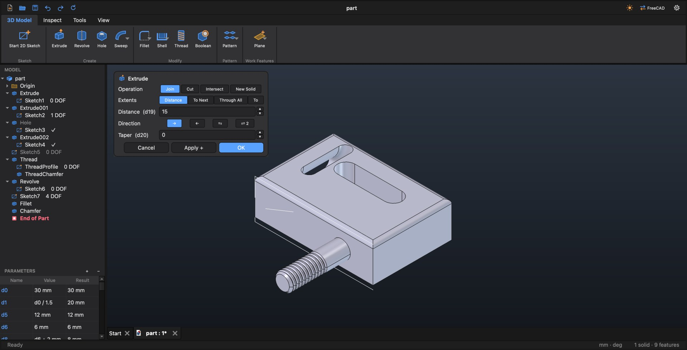
3D Model ▸ Create ▸ Extrude. Выдавливает замкнутый профиль эскиза в тело или вырезает им.
| Поле | Варианты и смысл |
|---|---|
| Operation | Join (добавить материал), Cut (вырезать), Intersect (оставить только общее у выдавливания и детали), New Solid (отдельное тело, глава 7). Если эскиз лежит на материале или внутри него, сразу выбран Cut, иначе Join. |
| Extents | Distance (на расстояние); To Next (до следующей грани детали; если в выбранную сторону ничего нет — в сторону детали); Through All (насквозь); To (до выбранной грани Face, плоской или кривой, или рабочей плоскости). |
| Distance | Длина (10 мм). |
| Direction | → в сторону по умолчанию, ← в другую сторону, ⇆ симметрично (по половине в каждую), ⇄ 2 в обе стороны на разную длину (Distance 2, 5 мм). |
| Taper | Уклон боковых стенок (0°). |
Join, который не касается детали, становится отдельным телом; строка состояния об этом скажет. Join и Cut можно поменять потом в диалоге, если на этом Extrude не построены другие операции.
3D Model ▸ Create ▸ Revolve. Вращает профиль эскиза вокруг оси.
| Поле | Варианты и смысл |
|---|---|
| Operation | Join или Cut. |
| Axis |
Sketch vertical или Sketch horizontal — собственные оси эскиза. Construction / projected line — вспомогательная линия эскиза или спроецированное прямое ребро, выбирается в списке Line. Если такая линия в эскизе одна, она выбрана сразу. Чтобы вращать вокруг ребра детали, спроецируйте это ребро в эскиз (ребро, перпендикулярное эскизу, проецируется в точку и в списке не появится). Line, axis or edge — в поле Pick укажите в виде линию эскиза, ось Origin или рабочую ось, или прямое ребро. Two points — щёлкните две точки (Points) на детали: углы, середины рёбер, центры окружностей. Они проецируются на плоскость профиля, поэтому ось всегда лежит в этой плоскости. |
| Extents | Full (360°), Angle (с Flip — в другую сторону), Two angles (Angle и Angle 2, по углу в каждую сторону). Углы по умолчанию 90°. |
Для спроецированной линии или двух точек InCad хранит под операцией скрытую ось Revolve axis; она удаляется вместе с операцией.
3D Model ▸ Create ▸ Hole. Простые, с цековкой, с зенковкой и резьбовые отверстия.
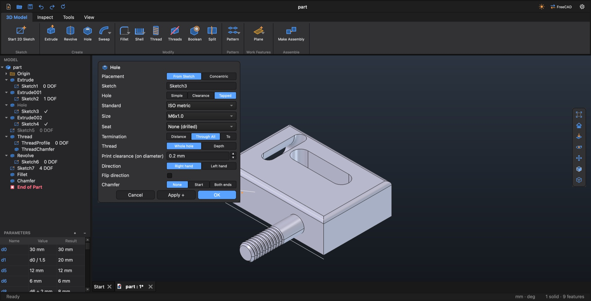
| Поле | Варианты и смысл |
|---|---|
| Placement | From Sketch: отверстие в каждой точке и в центре каждой окружности выбранного эскиза (Sketch). Concentric: укажите плоскую грань (Face) и круглое ребро (Circular edge); отверстие встанет соосно ребру. |
| Hole | Simple (диаметр Diameter, 5 мм), Clearance (под винт: Standard, Size и посадка Fit — Close, Normal, Loose), Tapped (с моделированной резьбой). |
| Standard | Для Clearance и Tapped: ISO metric, ISO metric fine, UNC, UNF, UNEF, NPT, G / BSP, BSW, BSF. |
| Size | Размер резьбы или Auto (from Diameter). |
| Seat | None (drilled), Counterbore — цековка (C'bore Ø 10 мм, C'bore depth 3 мм), Countersink — зенковка (C'sink Ø 10 мм, C'sink angle 90°), Spotface — подрезка (Spotface Ø 10 мм, Spotface depth 0,5 мм). |
| Termination | Distance (глубина Depth, 10 мм), Through All (по умолчанию), To (до To face — грани или рабочей плоскости). |
| Drill point | Для Distance и To: Flat (плоское дно) или Angle (Point angle 118°). |
| Thread | Для Tapped: Whole hole (на всю глубину) или Depth (Thread depth, 8 мм). |
| Print clearance (on diameter) | Для Tapped: насколько резьба делается больше, чтобы напечатанные детали подошли друг к другу (0,2 мм по диаметру). |
| Direction | Для Tapped: Right hand (правая) или Left hand (левая). |
| Flip direction | Сверлить в другую сторону. |
| Chamfer | None, Start, Both ends, размер Chamfer size (0,5 мм): заходная фаска 45° на входе и, у сквозного отверстия, на выходе. У резьбового отверстия фаска считается от диаметра резьбы, чтобы винт легко заходил. С цековкой, зенковкой или подрезкой фаска возможна только на выходе (Start серый). |
3D Model ▸ Modify ▸ Fillet / Chamfer (одна кнопка с вариантами). Выделите рёбра и нажмите команду — или выберите рёбра в диалоге. Есть и в меню-жесте на ребре (E Fillet, W Chamfer).
| Операция | Поля |
|---|---|
| Fillet | Edges, Radius (1 мм). |
| Chamfer | Edges; Type: Distance, Two distances (Distance, Distance 2) или Distance + angle (Distance, Angle 45°); Flip меняет стороны для двух последних типов. Расстояния по умолчанию 1 мм. |
Рёбра должны принадлежать текущей форме детали.
3D Model ▸ Modify ▸ Shell делает деталь пустотелой.
| Поле | Смысл |
|---|---|
| Remove faces | Грани, которые будут открыты (выберите их). |
| Thickness | Толщина стенки (1 мм). |
| Direction | Inside (внешний размер сохраняется) или Outside (стенка наращивается наружу). |
FreeCAD не умеет делать оболочку детали, в которой уже есть моделированная резьба. Тогда диалог предложит сделать Shell до резьбы; можно и самому перетащить End of Part выше резьбы, сделать там Shell и вернуть End of Part обратно.
3D Model ▸ Modify ▸ Draft (в одной кнопке с Shell) наклоняет грани для литья: выберите грани (Faces), нейтральную плоскость (Neutral plane — там грани сохраняют размер), угол Angle (1°); Reverse наклоняет в другую сторону.
В кнопке с вариантами в 3D Model ▸ Create после Hole. У каждой есть Operation: Join или Cut.
| Операция | Поля |
|---|---|
| Sweep | Профиль Profile (замкнутый эскиз) вдоль пути Path (другой эскиз: линии, дуги, сплайны). Wall (только для Join) делает трубу: толщина Thickness (1 мм) и концы Ends — Both open, Start closed или End closed. |
| Loft | Sections: два эскиза-сечения или больше, по порядку. Список показывает их с номерами; ▲ ▼ сдвигают сечение раньше или позже, ✕ убирает. Ruled — прямые грани между сечениями; Closed — последнее сечение соединяется с первым. |
| Coil | Пружина: профиль Profile (эскиз), ось Axis (ось, линия эскиза или прямое ребро), шаг Pitch (5 мм), высота Height (20 мм), направление Direction — Right hand или Left hand. |
Путь для Sweep обычно незамкнутый эскиз; такие эскизы остаются видимыми после Finish Sketch, их легко выбрать.
3D Model ▸ Modify ▸ Thread. Настоящая винтовая резьба — геометрия, которую можно напечатать. Выделите наружную поверхность вала или внутреннюю поверхность отверстия (полную цилиндрическую грань) и нажмите Thread. Есть и в меню-жесте на грани.
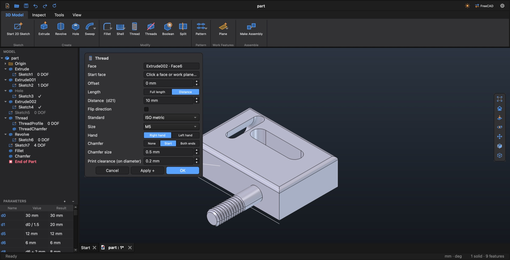
| Поле | Варианты и смысл |
|---|---|
| Face | Цилиндрическая грань под резьбу. |
| Start face | Необязательно: плоская грань на том конце, откуда начинается резьба. Без неё резьба начинается со свободного конца (торец вала, вход отверстия); у сквозного отверстия или свободного стержня — с конца, где есть фаска или скругление. |
| Offset | Отступ от начала (0 мм). |
| Length | Full length (на всю длину) или Distance (10 мм). |
| Flip direction | Начать с другого конца. |
| Standard | ISO metric, ISO metric fine, UNC, UNF, G / BSP, NPT (коническая), Trapezoidal, ACME, Print-friendly (с плоскими вершинами, размеры от M3) или Custom (шаг Pitch 1,5 мм, угол профиля Flank angle 60°, глубина Depth 0,9 мм). |
| Size | Размер по стандарту или Auto (from the face): размер, подходящий к грани (отверстие Ø3 — M3, Ø4 — M4; отверстие под метчик получает свою резьбу: Ø5,2 → M6, Ø8,5 → M10). |
| Hand | Right hand (правая) или Left hand (левая). |
| Chamfer | None, Start или Both ends, размер Chamfer size (1 мм). |
| Print clearance (on diameter) | Сколько места оставляет резьба, чтобы напечатанные детали свинчивались (0,2 мм по диаметру). 0 — номинальная резьба. |
Размер не совпадает с отверстием. В отверстии работает любой разумный размер: в отверстии Ø3 резьба M3 сначала заполняет отверстие до диаметра под метчик M3, а M4 сначала рассверливает его до диаметра под метчик M4. Эти вспомогательные шаги стоят в истории прямо перед резьбой; заполнение идёт только там, где у отверстия стенка по всему кругу. Размер, сильно отличающийся от отверстия, отклоняется с сообщением.
На стержне сначала стержень обтачивается до вершин резьбы (шаг ThreadTrim под Thread), чтобы на вершинах не оставалось тонкого гребня.
Suppress, Delete и Edit для резьбы действуют на неё вместе с её вспомогательными шагами.
3D Model ▸ Modify ▸ Threads. Моделированные резьбы замедляют перерисовку. Нажмите Threads, чтобы на время работы подавить все резьбы, и ещё раз, чтобы вернуть их. Резьба, которую вы подавили сами, остаётся выключенной. Команда выключает и моделированную резьбу резьбовых отверстий (сами отверстия остаются).
3D Model ▸ Modify ▸ Boolean (в Inventor — Combine) объединяет, вычитает или пересекает тела детали. Выделите базовое тело, затем тело-инструмент (одно или несколько) и нажмите Boolean — или выберите их в диалоге: щелчок в любом месте тела выбирает всё тело.
| Поле | Варианты и смысл |
|---|---|
| Base | Тело, которое меняется. |
| Tools | Одно или несколько других тел. Щелчок по базовому телу при выборе инструментов не учитывается. |
| Operation | Join, Cut (по умолчанию) или Intersect. |
| Clearance (per side) | Только для Cut: зазор с каждой стороны (0,2 мм), чтобы напечатанные детали входили друг в друга. |
| Clearance on | Только для Cut: Cavity (увеличивается полость), Tool (полость точная, а для печати делается уменьшенная копия «<Tool> fit»), Split (пополам). |
| Keep tool | Выключено (так диалог открывается): инструмент расходуется и виден в дереве под Boolean. Включено: инструмент остаётся отдельным видимым телом — напечатайте и штифт, и коробку. |
Инструменты остаются редактируемыми: измените инструмент — изменится и результат. Резьба и другие сложные формы могут не принять зазор; диалог об этом скажет.
3D Model ▸ Modify ▸ Split. Линии эскиза (отрезки, дуги, сплайны) становятся тонкими режущими поверхностями через всю деталь.
| Поле | Варианты и смысл |
|---|---|
| Sketch | Эскиз, линии которого режут деталь (выделите его до команды или выберите в диалоге). |
| Mode | Keep all: остаются все части; это тело сохраняет самую большую часть, а каждая другая часть становится отдельным телом — его можно скрыть, дорабатывать, сделать деталью (Make Assembly). Части продолжают следовать за эскизом. Keep picked: остаются только части, по которым вы щёлкнули (Keep). |
Удаление Split снова соединяет части; InCad сначала спросит и назовёт тела, которые исчезнут.
3D Model ▸ Pattern: Rectangular, Circular и Mirror (одна кнопка с вариантами). Они повторяют операции: выберите их в дереве или щёлкните одну из их граней. Выбор скругления, фаски или резьбы означает операцию, которую они изменяют.
| Операция | Поля |
|---|---|
| Rectangular | Features; Include dependent features (повторить и то, что на них построено, — например, отверстие в бобышке); Distribution: By spacing (Direction 1 — прямое ребро или ось, Count 2, Spacing 10 мм) или Equal spacing (Count копий между From и To: плоская грань, ребро или рабочая плоскость); Flip direction; Two directions (Direction 2, Count 2, Spacing 2). |
| Circular | Features, Include dependent features, Axis, Count (4), Angle (360°). |
| Mirror | Features, Include dependent features, Mirror plane (плоская грань или плоскость). |
3D Model ▸ Work Features: Plane, Axis, Point (одна кнопка с вариантами). Выберите способ (Method) и укажите то, что он просит. Рабочие элементы следуют за геометрией, по которой построены.
| Элемент | Способы |
|---|---|
| Work Plane | Offset from plane (Offset 10 мм), Parallel through point, Midplane (между двумя плоскостями), Angle around edge (Angle 90°), Three points, Normal to edge at point, Tangent to surface at point. |
| Work Axis | On edge, Two points, Intersection of two planes, Normal to plane through point, Axis of a cylinder, Parallel to edge through point. |
| Work Point | At vertex, Center of circle, Midpoint of edge, Edge meets plane, Two edges meet. |
Где просят плоскость, подойдёт плоская грань, рабочая плоскость или плоскость Origin. Двойной щелчок по рабочей плоскости начинает на ней эскиз.
В детали может быть несколько отдельных тел — например, инструмент и деталь, которую он режет, или деталь, которую вы будете печатать частями.
Тогда в дереве появляется Solid Bodies (n) со строкой для каждого тела. История остаётся одним списком: у операций других тел указано, к какому телу они относятся.
Новое тело, нарисованное на грани другого тела, содержит только свою часть; тело под ним остаётся как было. Эскиз следует за этой гранью, только если он проецирует рёбра другого тела; иначе грань лишь задала ему плоскость.
Правый клик по строке тела: Hide / Show, Rename, Show in Window, Delete. Скрытое тело в дереве бледное. Delete спрашивает, если тело использует Boolean (удаляются вместе) или если это главное тело (главным станет следующее). Если выделить часть в виде и нажать ⌫, удалится это тело.
Когда части готовы, 3D Model ▸ Assemble ▸ Make Assembly делает из каждой отдельной части свой файл детали и связывает их в новой сборке там, где они были. См. 9.12.
Измерения, масса, материал, сечения и настройки.
Inspect ▸ Measure (кнопка с вариантами). Измерение остаётся включённым: каждое изменение выделения измеряется заново, результаты показываются в маленькой панели. Esc — завершить.
| Команда | Выделите | Показывает |
|---|---|---|
| Measure | Грань, ребро, тело или два элемента | Площадь; длину или радиус и диаметр круглого ребра; объём, площадь поверхности и габарит тела; для двух элементов — расстояние (и угол, если у обоих есть направление) |
| Distance | Две грани, ребра или точки | Расстояние; между двумя точками ещё ΔX, ΔY, ΔZ |
| Angle | Две плоские грани или прямых ребра | Угол |
| Length | Рёбра (контур) | Общую длину и число рёбер |
| Area | Грани | Общую площадь и число граней |
Inspect ▸ Measure ▸ Mass Properties показывает объём (Volume), площадь поверхности (Surface area), массу (Mass) и габарит (Size) детали. Масса считается по плотности материала детали (8.3).
Tools ▸ Material ▸ Material задаёт материал детали: его плотность для Mass Properties и цвет. По умолчанию PLA.
| Материал | Плотность, г/см³ | Материал | Плотность, г/см³ |
|---|---|---|---|
| PLA | 1,24 | Nylon | 1,14 |
| PETG | 1,27 | Resin | 1,18 |
| ABS | 1,04 | Aluminium | 2,70 |
| ASA | 1,07 | Steel | 7,85 |
| TPU | 1,21 |
View ▸ Visual Style ▸ Section разрезает вид — сама модель не меняется.
Сечения работают и в деталях, и в сборках.
Сборка ссылается на файлы деталей и удерживает их связями и соединениями, как в Inventor. Детали остаются отдельными файлами .FCStd.
Сборка ссылается на файлы деталей, поэтому её нужно сохранить до вставки первой детали. InCad делает это сам: при вставке первой детали новая сборка сохраняется рядом с этой деталью под своим именем; если файл с таким именем там уже есть, InCad спросит имя и папку. Create сначала попросит сохранить сборку.
Create спрашивает имя нового файла детали (New part file name) и создаёт пустую деталь рядом со сборкой, сразу вставленную в неё. Ground закрепляет выделенную деталь или освобождает её.
В сборке дерево показывает саму сборку, по строке на каждую деталь и раздел Relationships (n) со связями и соединениями.
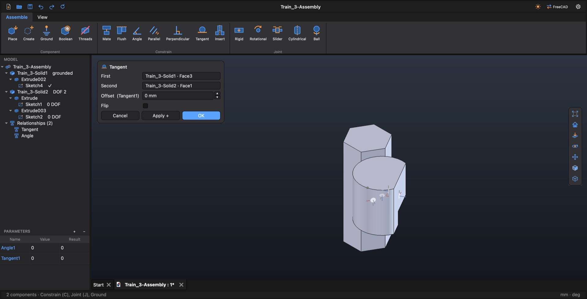
Двигается свободная деталь; закреплённая не двигается никогда. Связь, которую нельзя выполнить вместе с остальными, отклоняется: «Mate conflicts with the other constraints (it can't be met)». Смещения и углы — это параметры, названные по связи (Mate1, Flush1, Angle1 …); они видны в панели Parameters.
| Связь | Что указать (First, Second) | Что делает | Значение, Flip |
|---|---|---|---|
| Mate C | Две грани | Грани прижаты друг к другу, смотрят навстречу. | Offset (0 мм). Flip: грани смотрят в одну сторону. |
| Flush | Две грани | Грани вровень, смотрят в одну сторону. | Offset. Flip: куда смотрят грани. |
| Angle | Плоские грани или прямые рёбра | Под заданным углом. | Angle (90°). |
| Parallel | Плоские грани или прямые рёбра | Остаются параллельными; расстояние свободно. | — |
| Perpendicular | Плоские грани или прямые рёбра | Остаются под 90°. | — |
| Tangent | Круглая грань и плоская или круглая | Грани касаются. По умолчанию круглая грань снаружи детали с плоской гранью. | Offset. Flip: снаружи или внутри. |
| Insert | Два круглых ребра | Оси совпадают, грани рёбер прижаты (винт в отверстии); деталь ещё может вращаться. | Flip: направление. |
| Rigid J | Грань, ребро или точка на каждой детали | Детали жёстко соединены. | — |
| Rotational | Грань, ребро или точка на каждой детали | Шарнир: вращение только вокруг одной оси. | Flip: направление. |
| Slider | Грань, ребро или точка на каждой детали | Скольжение только вдоль одного направления. | Flip: направление. |
| Cylindrical | Грань, ребро или точка на каждой детали | Вращение вокруг оси и скольжение вдоль неё. | Flip: направление. |
| Ball | Грань, ребро или точка на каждой детали | Свободное вращение вокруг точки. | — |
Для соединений круглое ребро задаёт свой центр и ось — для шарниров и валов указывайте круглые рёбра.
У каждой связи и соединения есть строка в разделе Relationships. Двойной щелчок открывает правку. Правый клик: Edit, Delete, Suppress / Unsuppress и Rename. Подавленная связь зачёркнута; решатель её не учитывает, а детали остаются на своих местах. Вернуть связь, которую уже нельзя выполнить, не получится — команда будет отклонена.
Степени свободы детали — это то, как она ещё может двигаться: до трёх сдвигов и трёх поворотов. InCad считает их относительно того, что держит деталь (остальные свободные детали на время подсчёта удерживаются на месте):
У полностью определённой (DOF 0) и у закреплённой детали значка нет.
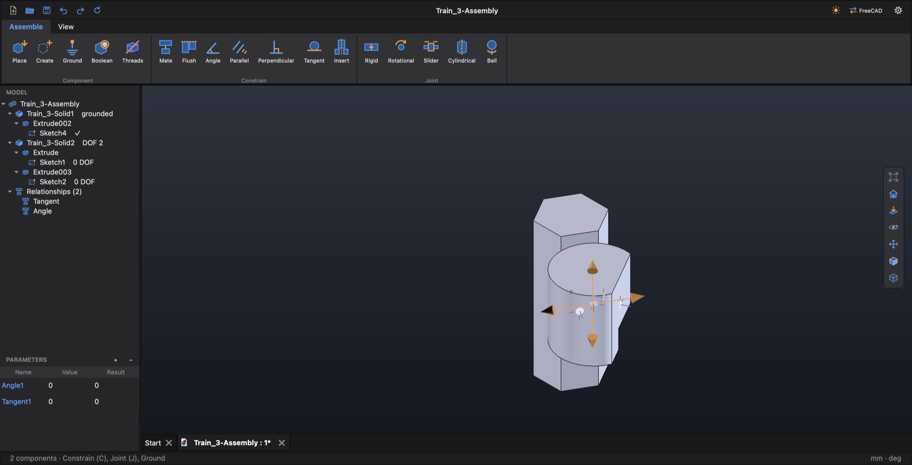
Перетащите свободную деталь левой кнопкой: она двигается только так, как ей ещё позволяют связи, — блок с Mate скользит и поворачивается по своей грани, вставленный штифт вращается в отверстии. Остальные детали стоят на месте, даже свободные. Полностью определённая деталь не двигается (строка состояния скажет «… is fully constrained»); при попытке сдвинуть закреплённую будет сказано, что она закреплена.
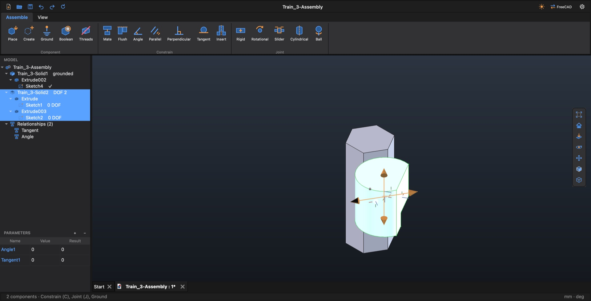
Гизмо. Щёлкните свободную деталь: её значок степеней свободы превратится в гизмо — стрелка для каждого направления, в котором она может скользить, и дуга для каждой оси, вокруг которой может поворачиваться.
Каждое перетаскивание, которое сдвинуло деталь, — один шаг отмены («Move part»); ⌘ Z возвращает деталь на место. Пока открыт диалог связи, перетаскивание отключено.
Правый клик по детали ▸ Edit (или двойной щелчок по её строке): деталь откроется в своей вкладке, а вокруг неё будут нарисованы остальные детали сборки — серые, полупрозрачные, на своих настоящих местах. Они только для ориентира: их нельзя выбрать, и они не сохраняются в детали. Меняйте деталь как обычно и сохраните её.
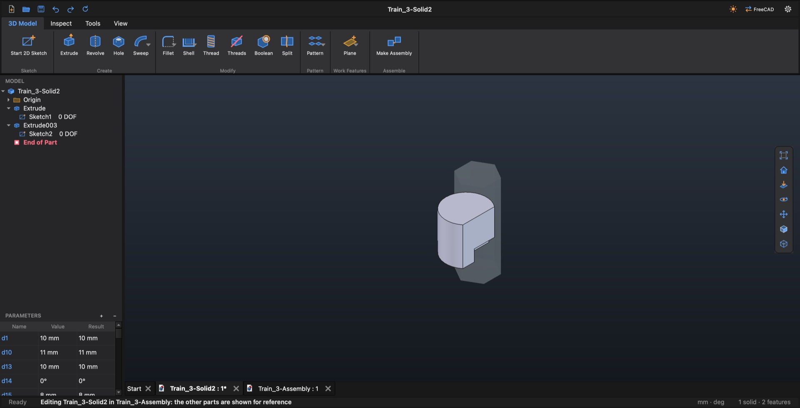
View ▸ Assembly Context (меню View или вкладка View детали) выключает и включает остальные детали.
Когда вы возвращаетесь во вкладку сборки после изменения детали, InCad спрашивает: Parts of … changed. Update the assembly now?
| Команда | Что делает |
|---|---|
| Hide / Show | Скрывает или показывает выделенную деталь; скрытая строка бледная. |
| Suppress | Деталь скрыта, её связи выключены; повторно — вернуть. |
| Remove from Assembly | Убирает деталь из сборки; файл детали остаётся. |
| Ground | Закрепляет деталь на месте или освобождает её. |
Смоделируйте изделие как одну деталь из нескольких тел (глава 7), затем одним шагом превратите её в сборку.
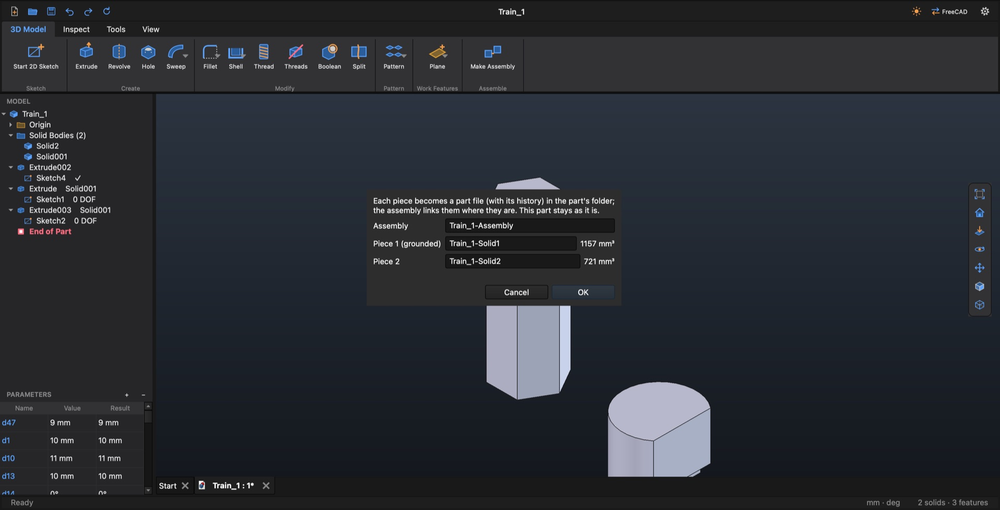
Assemble ▸ Component ▸ Boolean вырезает одну деталь другими, например гнездо под подшипник:
| Поле | Смысл |
|---|---|
| Cut this | Деталь, которую вырезаем. |
| With | Деталь (детали), которыми вырезаем. |
| Clearance | Зазор для печатных деталей (0,2 мм). |
| Clearance on | Cavity, Tool или Split — как у Boolean в детали (6.11). |
Вырез записывается в собственный файл вырезаемой детали и следует за инструментами, когда они двигаются или меняются. Сохраните и этот файл детали. У выреза есть строка в Relationships (Edit, Delete, Rename).
Assemble ▸ Component ▸ Threads выключает все резьбы всех деталей (быстрее перерисовка) и включает их обратно. Команда меняет файлы деталей: сохраните их вместе со сборкой.
Save сохраняет файл в активной вкладке. Деталь, изменённая из сборки, вырезанная командой Boolean или изменённая Threads Off / On, — это отдельный файл: сохраните и его (переключитесь на его вкладку или дайте Quit спросить про все изменённые файлы).
InCad делался с расчётом на печатные детали. Несколько привычек избавят от лишних перепечаток.
Пожалуйста, пришлите:
~/Library/Logs/InCad.log (Finder ▸ Переход ▸ Переход к папке… ▸ ~/Library/Logs);Если FreeCAD упал, macOS покажет отчёт о сбое: пожалуйста, скопируйте и его текст.
Одиночные клавиши работают в указанном режиме. На Mac сочетания с Ctrl у InCad — это сочетания с ⌘.
| Клавиша | Команда |
|---|---|
| Деталь | |
| S | Start 2D Sketch |
| E | Extrude |
| R | Revolve |
| H | Hole |
| F | Fillet |
| Эскиз | |
| L | Line (M: линия / дуга при рисовании) |
| C | Circle |
| A | 3-Point Arc |
| R | Rectangle |
| X | Trim |
| D | Dimension |
| Tab | Следующее поле значения при рисовании |
| F7 | Slice Graphics |
| F8 / F9 | Show / Hide Constraints |
| Сборка | |
| P | Place |
| C | Mate |
| J | Rigid |
| Клавиша | Команда |
|---|---|
| Везде | |
| ⌘ N | New |
| ⌘ O | Open |
| ⌘ S | Save |
| ⇧ ⌘ S | Save As |
| ⌘ W | Close (спросит о сохранении) |
| ⌘ Q | Quit (спросит о сохранении) |
| ⌘ Z | Undo |
| ⇧ ⌘ Z | Redo |
| ⌫ / Del | Удалить выделенное |
| Esc | Отменить диалог, остановить инструмент, закончить эскиз |
| В диалогах и полях ввода | |
| Enter | Применить значение (поле ввода размера) |
| ↑ / ↓ | Значение в диалоге на шаг больше / меньше |
| ⇧ + ↑ / ↓ | На десять шагов |
Все вкладки, группы и команды. «A | B | C» — одна кнопка с вариантами: показана A, B и C — в её списке.
| Вкладка | Группа | Команды |
|---|---|---|
| 3D Model | Sketch | Start 2D Sketch |
| Create | Extrude · Revolve · Hole · Sweep | Loft | Coil | |
| Modify | Fillet | Chamfer · Shell | Draft · Thread · Threads (Threads Off / On) · Boolean · Split | |
| Pattern | Rectangular | Circular | Mirror | |
| Work Features | Plane | Axis | Point | |
| Assemble | Make Assembly | |
| Inspect | Measure | Measure | Distance | Angle | Length | Area · Mass Properties |
| Tools | Material | Material |
| Options | Return to FreeCAD · Ask on New | |
| View | Appearance | Light / Dark |
| Navigate | Zoom All · Home View · Look At · Zoom Selection · Orbit · Pan | |
| Visual Style | Shaded · Wireframe · Section | Section by 3 Points · Hide / Show | Show All Origin | Hide All Origin · Assembly Context | |
| Windows | Parameters |
| Вкладка | Группа | Команды |
|---|---|---|
| Sketch | Create | Line | Single Line · Circle | 3-Point Circle | Ellipse | 3-Point Ellipse · 3-Point Arc | Center Arc | Elliptical Arc · Rectangle | Center Rectangle | 3-Point Rectangle | 3-Point Center Rect. | Rounded Rectangle · Center-to-Center Slot | Overall Slot | Center Point Slot | Arc Slot | Flat-End Arc Slot · Hexagon | Triangle | Square | Pentagon | Octagon | Polygon (N sides) · Spline | Control-Vertex Spline · Point |
| Modify | Fillet | Chamfer · Trim · Extend · Offset | |
| Pattern | Rectangular | Circular | Along Path · Mirror | |
| Dimension | Dimension | |
| Constrain | Coincident · Horizontal · Vertical · Parallel · Perpendicular · Tangent · Equal · Symmetric · Fix · List (Constraint List) | |
| Insert | Project (Project Geometry) | |
| Format | Construction · Constraints (Show / Hide Constraints) · Free DOF (Show Free Geometry) · Slice (Slice Graphics) | |
| Exit | Finish Sketch | |
| View | Appearance | Light / Dark |
| Navigate | Zoom All · Home View · Orbit · Pan | |
| Visual Style | Shaded · Wireframe · Section | Section by 3 Points | |
| Windows | Parameters |
| Вкладка | Группа | Команды |
|---|---|---|
| Assemble | Component | Place · Create · Ground · Boolean · Threads (Threads Off / On) |
| Constrain | Mate · Flush · Angle · Parallel · Perpendicular · Tangent · Insert | |
| Joint | Rigid · Rotational · Slider · Cylindrical · Ball | |
| View | Appearance | Light / Dark |
| Navigate | Zoom All · Home View · Look At · Zoom Selection · Orbit · Pan | |
| Visual Style | Shaded · Wireframe · Section | Section by 3 Points · Hide / Show · Degrees of Freedom | |
| Windows | Parameters |
| Вкладка | Группа | Команды |
|---|---|---|
| Get Started | New | New · New Assembly · Open |
| View | Appearance | Light / Dark |
Команды только в меню-жестах: Show in Browser, Show in Window, Move End of Part Here, Suppress / Unsuppress, Rename, Delete, Edit, Stop Tool, Edit Pattern, Delete Pattern, Suppress (деталь сборки), Remove from Assembly.